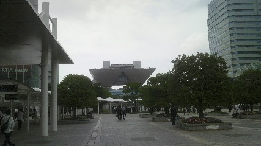

博麗神社例大祭 本祭
2013/05/26
翌日ー
8時ごろまでG3宅でゆっくりしてる、一般参加なので早く行きすぎてもダメなのよねん。
でも7:30ごろにサークル参加していたkaz君から既に一般参加列がやばいとのツイートが、ﾊﾊﾊﾏｻｶﾅ・・・
さて、一端G3宅を後にして近くのコンビニで水分と昼食のカロリーメイトを確保しておく。
いくら夏ではないとはいえ水分は大事よ。
途中でぶっ倒れたら楽しめないですしね。
池袋駅から有楽町線で新木場駅へ。
ちらほらと同志が
そして新木場駅から臨海線で国際展示場駅へ。人が増えてきました。
国際展示場駅
さて・・・着きました・・・東京ビッグサイト！

よお・・・1年ぶりだな・・・(正確には去年の夏コミ以来)
ビッグサイト到着。流れに沿って東ホール方面へ。
人が多いとはいえ流れているので列も止まらずスムーズに移動できました。
スタッフの誘導で一般参加列は一度東館内へ入り、そのまま素通りしていつもの待機場所(東駐車場(第一・第二))に到着。
ペナルティ部屋へ誘導されるかと思ったけどそんなことはなかった。
既に人の海状態で到着順では全体の真ん中ちょい後ろって感じでした。
人の海、まさに人海
いやーこの人の海見ないとイベントに来た！って感じがしませんねー（←
写真だとちょっと暗めですが案外晴れ間もありました。
日光で照りつけられすぎず待機はしやすい環境でした。
・
・
・
10:30開演、拍手と共に列移動開始、とはいえ先頭からなのでまだまだ動く気配なし。
まあ昼前に入場できればいいかという心持ちで、興奮してきました。
11:00列が動き出し、ホール内へ入場。
いつものようにカタログを頭上へ掲げて入場のチェック。
今回は入場後しばらくは東１２３と東４５６の行き来の際にも提示を求められました。
うーむカタログはかさばるからリュックにしまっておきたかったんだが・・・ まあ仕方ないね。
特に始発組ではないので(ていうか始発組はダメ)超大手さんのところへは行く気は最初からありませんでした。（委託あるし）
案の定既に神主さんのところ「上海アリス幻樂団」と
黄昏さんとこの「黄昏フロンティア」は長蛇の列だったようです。
待機列は会場の外に形成されんですが会場のホールの長辺3往復分くらい並んでいたようです。そして最後尾札を持つ神主zunさん（kaz君情報）
黄昏さんの新作『東方心綺楼』と神主さんの『東方輝針城(体験版)』はすさまじい惹きつけ力を持っていました。
・
・
・
そんな超大手さんに並んでいる列を尻目にそれからはサークルさんまわりまわり。
今回はツイッター等で交流がある方やニコニコ生放送で放送してる方のところへ優先的に行きました。
といっても一リスナー勢、一ファンとしてこちらから一方的に応援してる立場なので相手からは「誰こいつ」的な印象を持たれたでしょう。
一応そういうこともわきまえながら差し入れのあめ玉を購入時に小銭と一緒に手渡す作戦。
普通に飲み物とかは別な人がいっぱい持ってくるでしょうし、ならばスキマ時間にちょこっと食べれるあめ玉がいいかと。
以後、多少時系列のズレがあると思われます。
何を話したかも結構その場ではテンパってて記録してなかったんで内容もあやふやですがとりあえず訪れたサークルさんを順に紹介していきたいと思います。
あと、以下では「購入」や「買う」といった表現を使っていますが、例大祭には店、お客は存在しません(ここ重要)。
すべての人が「参加者」であり全員でイベントを創っています。
その趣や機微に敬意を表したいのですが他にいい言い回しが思いつかなかったので直感的に行動を分かりやすい表現を用いました。御了承ください。
・
・
まず今日のオフ会でお世話になるryosiosさんのところへ。
軽く挨拶してオフ会よろしくお願いしますと言えました。あとあめ玉の差し入れ。（コミュ障）
今回はReioさんとともにサークル「Helligkeit」としてのご参加。
生放送でリスナー勢として交流をもてて、オフ会も企画してくださいました。ありがとうございます。
画集『絢爛幻想詩』を買いました。あれ・・・Reioさん分の絵の中にsammer・・・誤字なんて気にしない！
続いて古宮幸羽(ｺﾐﾔﾕｷﾊﾈ)さんの「ファンテールフライト」へ。
こちらのサークルさんは以前、仙台の同人イベント「社の奇跡」で参加していたところに目がとまり、以後ストーキング（ぇ してたところです。
サインペン(?)一本で描いたモノクロお空ペーパーがかわいくて今でも持ってます。
今回は合作とのことで『幻想Skyraider』『レーザーライトテーマパーク』の2冊を配布されてました。
それぞれテーマは「空からの襲撃者」「蛍光灯、ネオン」なようです。
合作なので作者さんは多数おりますがどなたも味があっていい。
古宮さんも合作のとりまとめお疲れ様でした。画力が確実に向上していますね。
次にツイッターでお世話になっている河内蟋蟀(ｺｵﾛｷﾞ)さんのところへ。
アナログで活躍している絵師さんで４コマ漫画がおもしろい。
今回は『剣と魔法の幻想郷』という新シリーズ、新コンセプトの設定集的なナニカと追記のモノクロコピ本を配布されていました。
いわゆる『との郷』シリーズ、こういう設定集というのは大好きです。
原作に縛られすぎないRPG風世界観で行くようですが自由である分それなりに設定を詰めないと収拾がつかなくなりそうです。今後の展開に期待。
さてここらでkaz君が売り子してるサークル「弾丸街道」へ。
しばらくうろうろして（ほんとにここで合ってるのか分からないチキン）到着。
残念ながらkaz君は神主さんのところの長蛇の列に並んでいたようでいませんでしたがサークル主のヤマタカエさんに挨拶。
前日にkaz君経由でサークル情報とニコ動でのピアノ演奏動画を視聴してました。多才！
新刊『Little Remilia』購入、話の構成・ネタの盛り込みぐあいはすばらしい。欲を言えばもうちょっと画力を・・・
お次はまたもツイッターでお世話になっているGmoT(ｼﾞﾓﾃｨｰ)さんのところへ。
以前からPixivでお見かけしていましたが塗りがかっこいい絵師さんです。
今回は画集とのことで、下書き・線画・下塗り・完成と行程を追ったメイキング画集のような構成で描かれていました。
お空ちゃん、鵺ちゃん、あややと有翼の娘たちがかっこいい。羽の描き方や陰影がすごく好みです。
さてまだまだ続きます。
お次は「れいてぃ屋」のレイぽそさんのところへ。はるばる北の大地からのご参戦です。
新刊は『揺れる大地ち』・・・あの、出オチ感がパないんですが・・
中身も当然予想に違わずギャグ満載。このノリ、大好きです＾ｐ＾
サイトの方で毎日連載(!)してる雑記漫画がもうすぐ完結しそうとのことで、その応援もしてきました。
約１０年ほど連載してるこの雑記漫画『東方紫逢魔』も一番始めのころと比べると絵が全然違いますねー（←
お話の構成もうまくて惹きつけられる漫画です。もちろん新刊も。
続いて薙派(ﾁﾊﾟ)さんのところへ。
Pixivでお見かけしてかわいい絵を描く絵師さんとの認識でしたが、
今回のEx3人娘総集編を見て漫画もおもしろいと認識を新たに。
ぬえちゃんかわいい、フランちゃんかわいい、こいしちゃんかわいい、あと（ry
フランちゃんの爆破能力が某炎の大佐みたくなってたり小ネタも盛りだくさんで楽しめました。
お次は以前ニコ生にちょこっとだけお邪魔したけとろさんの東方合作『WORLDLY』を購入。
こちらはよく生放送に行くつのつきさんからの繋がりで知ったのですが・・・どうやらつのつきさんはいなかった様子。
忙しくて例大祭自体に参加できずとのことで。応援してますヽ(・ω・)ノ
東方合作『WORLDLY』のテーマは「MODERN」と「FANTASY」で、各絵師さんがそれぞれに１枚づつ描いて合作したようですね。
「MODERN」の現代テーマはどうしても哀しい雰囲気になりがちですがそれだけではないムードを感じました。
「FANTASY」、幻想テーマは普段の幻想郷に留まらずRPG的な世界観が伺えました。(椛をもののけのサンにしたの誰だよ！)
そして忘れてはいけないポルリンさんの大手サークル「ツキヨミ」、新刊『着せ替え紅魔館』を含むクリアファイルつきの新刊セットを購入。
嫁リンさん（ポルリンさんの奥さん）から手渡してもらえました。ふつくしい
ポルリンさんは生放送でのお絵かき放送を配信していて、そこによくお邪魔するので１ファンとして応援してきました。
去年の例大祭で購入した霊夢のTシャツ、着てきましたよー 夏入り口のこの時期に着やすいですね。
今回は壁ではなくいわゆるお誕生日席でのご参加。それほど前回より列ができていなかったのは時間帯を遅くしたせいかな？
イベント後に体調を崩されたようで、ご自愛ください。
続いてちょっとえちぃ本。
大月渉さんの『橋姫抄-壱-』、パルパルのえちぃ本、総集編です。
お話もよくできていていつもお世話になっております（意味深）
えちぃ本２つめ。
みずがさんの『Pet』1と2の二冊。おりんりん本です。
こちらは逆に「前置き？なにそれおいしいの」とばかりのエロくないページがない構成。
お燐ちゃんかわいい。エロい。
(内容が内容だけにあまり言及するとやばいのでこのへんで自重、大収穫でした)
ホール外から 休憩するには外の方が風通しがよくていい
さて、ここからは当日会場で目にとまったサークル主、作品の紹介です。
いわゆる「発掘」ってやつですね、失礼な言い方をすると。
まずは木ノ下ツユキさんの『東方武器少女』1と2。
展示されていたフランちゃんのレーヴァテイン絵に惹かれて。
うどんげの銃や妖夢の剣など武器をコンセプトとした画集で、こういった小道具のデザインが非常に凝っている。
それだけでなくキャラも大きく、個性的。決して武器にくわれることなく引き立っています。
武器少女3も期待しております。
お次はサークル「SeaFox」の『想目録』、こちらも総集編です。サークル主は霧咲白狐(ﾋﾞｬｯｺ)さん。
表紙の古明地姉妹に惹かれて、内容は古明地姉妹だけでなくいろいろなテーマで描いておりました。
「初見のサークルさんはとりあえず総集編を買う」という自分の方針の元買わせていただきました。
各キャラがいきいきとしていておもしろかったです。お空「全力全開！―――サブタレイニアン・・・ブレイカァーーー！！！」
続いてはサークル「M art gallery」の『水彩画帖 紅』。サークル主は三澤寛志(ﾐｻﾜ)さん。
なんと画業30年の超ベテランアナログ絵師さん・・・画家さんです。
本業本職の画家さんとは通りで絵に力があるわけです。
油絵・水彩画・デッサンなどアナログ全般でご活躍していらっしゃるようです。
メイキングも載ってるんですがすごすぎて何が何やら自分の理解の範疇を超えています。
えーとこれは水彩画でいいんですよね？（錯乱） 水彩画と聞くと淡くて薄いイメージがあったんですがとても力強く、まさに絵画といった感じを受けました。
テーマは紅魔郷、登場キャラを1面から順に描いています。
るみゃかわいい、大ちゃんかわいい、フランちゃんかわいい(ry 紅魔郷は全員大好きです。
・
・
ここからは例大祭のちょっと変わった一面を。小説本です。
同人誌と言うとどうしても絵・漫画といったビジュアルのイメージがありますが、
例大祭には多くの小説・ＳＳッサーさんも参加しております。
想像力を武器に世界を展開するその力は絵師さん方にも引けをとりません。
まず、サークル「猫蜻蛉(ﾈｺｶｹﾞﾛｳ)」の『スコアを探して』、著者はねこかりさんです。
まず、初見で表紙を見た感想は「珍しい組み合わせだな」でした。
ルナサ・上海・小悪魔、およそ共通項がない・・・と思いきやルナサから楽譜で図書館に繋げて、感情で上海に繋げました。お見事
あらすじは、ルナサが遠い昔に聞いたことがある・見たことがある曲の楽譜を求めて、紅魔館図書館、人里・鈴奈庵、地底地霊殿へと楽譜を探しに行く物語。
紅魔館でパチュリーとアリスの端末として小悪魔と上海をお供に引き入れて、各地を旅します。
その楽譜の内容とは？紅魔館で開かれる失われた曲の演奏会、上海に芽生えた感情とは。その楽譜の名前とは。
あまり深く内容をご紹介できないところが心苦しい。（ネタバレとの境界が分からぬえ）
小説を出しているサークルさんを見るときは、残念ながらあまり長居して中身を読むわけにもいきませんし、ある程度自分の中で指標を立てざるを得ません。
その中のひとつに「秘封本に悪書はない」という経験則があります。
というわけで秘封島（例大祭のサークルはある程度ジャンルごとにまとまっている）を小説目当てにふらふらとまわっていたところ、見つけました。
サークル「鏡花風月」の『少女現葬』、著者は和紀(ｶｽﾞｷ)さん。
まず目についたのはその装丁。見開きで、霊夢編と魔理沙編の2冊が。とても哀しそうな表情。
本を取り出すと秘封の2人が、こちらも哀しそうな表情。はい、どうみても鬱ものです本当にありがとうございました。
目次を見て「短編集ですか？」と聞いてみたところ、『2冊で仕掛けが・・・(ry』とのことで「じゃあください！」と即決したというアレな人でしたとさ。
内容は魔理沙の最後と幻想郷の終焉を綴った物語。2冊での仕掛けとは霊夢サイドと魔理沙サイドの2視点進行。時系列は同じでそれぞれの視点から物語が進みます。
「魔理沙が弾幕勝負をしなくなった―――」ということから始まり、人間の魔法使いとしての寿命が近いと周囲も気づき始める。
やがて訪れる魔理沙との別れ――お互いに慕いあっていた霊夢は何を思うか。そして秘封倶楽部がいる外の世界との繋がりは。幻想郷を創った八雲紫の真意とは。
その終焉と取り巻く環境が起こす人妖の思いは。哀しい物語、だけれどもそれだけではない何かを感じました。
はい、怒濤の紹介ラッシュでした。
いやー字ばっかりで読みにくくてすいません（＾＾；
ここで紹介したサークルさん以外にも惹きつけられたところはありましたが(正真正銘「巻物」の絵巻スクロール(全長6メートル・現品限り・オークション形式)とか)
今回は主に本の方しかまわってなかったので、グッズ系統はほぼノーマークでした。悔やまれる。
それと会場ではコスプレイヤーさん達がクオリティの高いコスプレをしており、見ることができました。
ネタに走ったもの、小道具まで追求したもの、それぞれの路線で表現されておりました。
コスプレスペースではレミィ（のコスした人）がフラン（のコスした人）を膝枕してました。かわいい。
あとフランの羽のクリスタル部分に電飾を仕込んで実際に発光させていた人もいました。
コスプレスペースの端には「東方との出逢い」をテーマとして誰でもなんでも書き込めるらくがきスペースがありました。
そのなかに・・・この墨絵風なのは・・・絶対うらんふさんだろ・・・ってのも混じってたり、ほんとにいろいろな人の落書きが見られました。
クオリティは落書きってレベルじゃなかったですけど。(写真撮り忘れました)
とりあえず例大祭本祭の様子はこんな感じで、続いてオフ会の様子を書き綴って行きます。
（アフターフェスティバルへ続く）
博麗神社例大祭 アフターフェスティバルへ続く